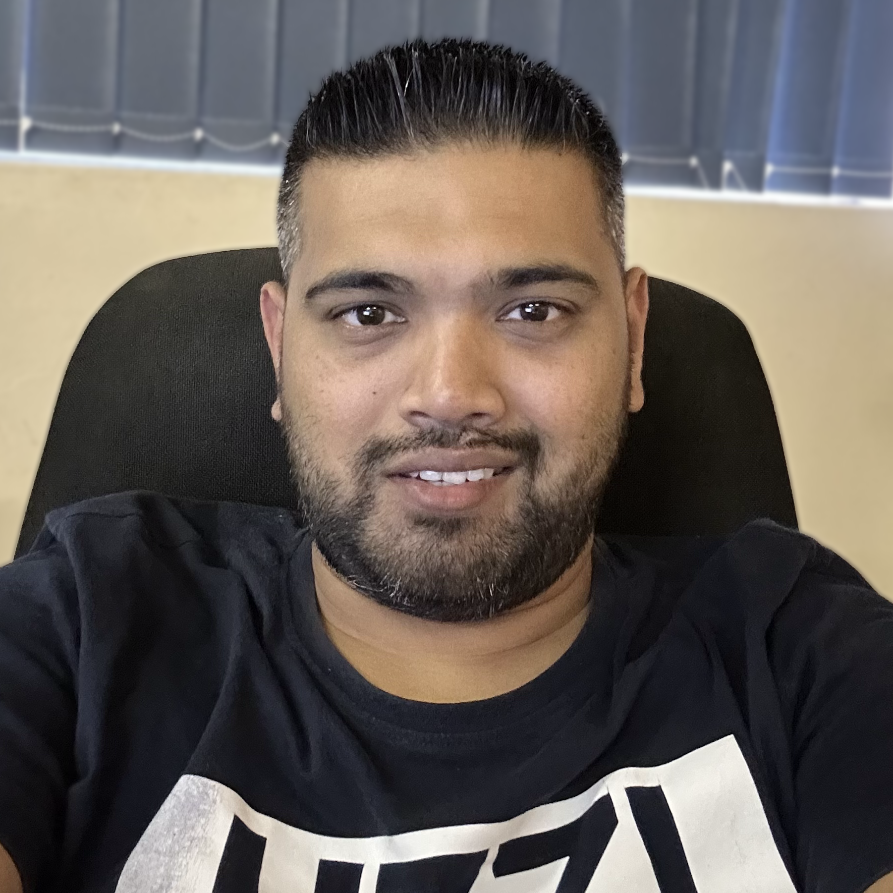

Sanesh Gobin

Summary
I am a hardworking and dedicated individual with experience in the IT industry and customer service.
Education
- Senior Certificate - Verulam Secondary School (2006)
- Higher Certificate in Informantion Technology - Richfield Graduate Institute of Technology (2018)
Work Experience
Skill
- Customer Service:⭐⭐⭐⭐
- Microsoft Office Suite::⭐⭐⭐
- Problem Solving:⭐⭐⭐⭐
- Troubleshooting:⭐⭐⭐⭐⭐
- Teamwork::⭐⭐⭐⭐
Awards and Certifications
- 100% Attendance - Marshalls World of Sport (February 2012)
- Long Service (5 years) - Marshall's World of Sport (June 2015)
- Long Service (10 years) - Marshall's World of Sport (June 2020)
Other